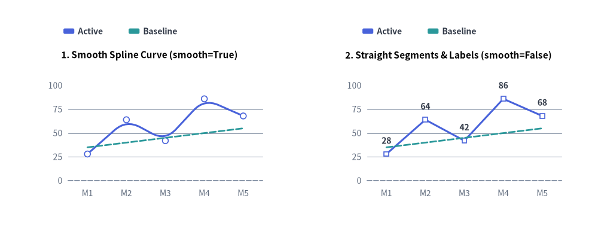
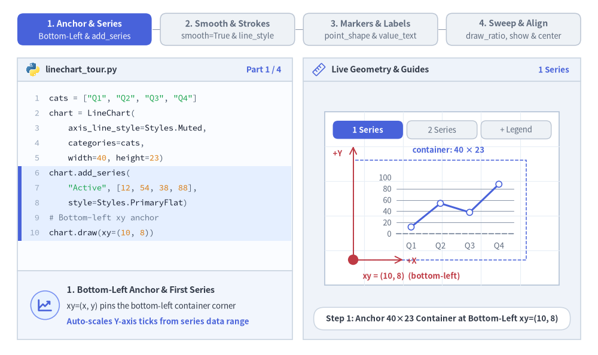
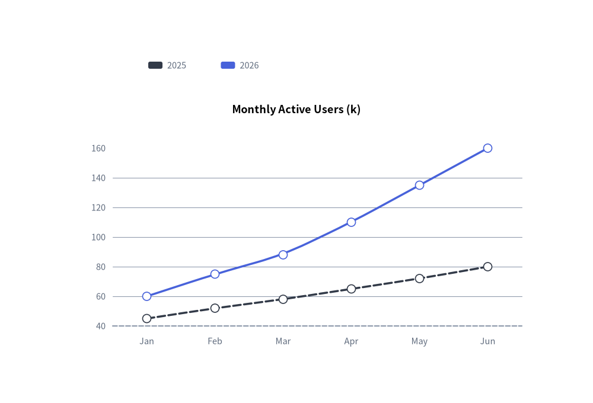
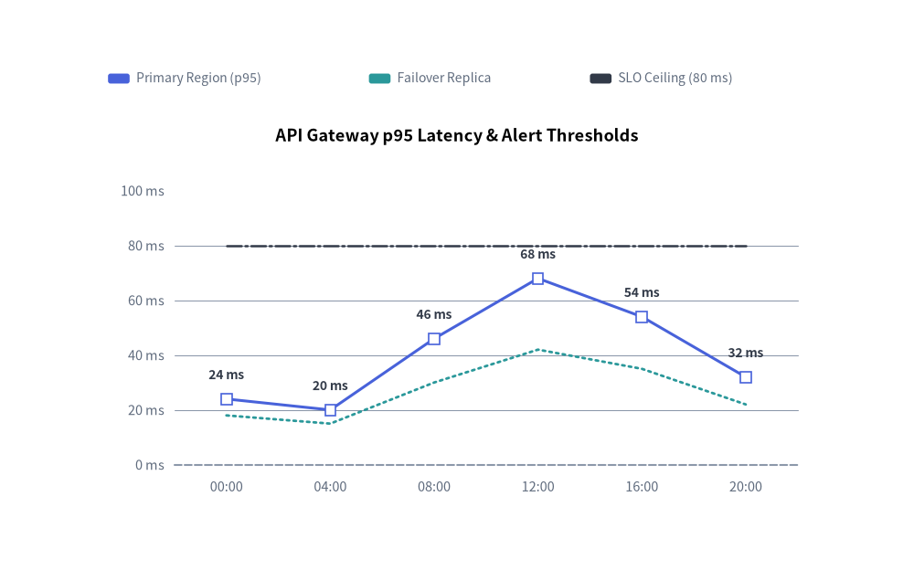

LineChart: Continuous Trends, Markers & Splines
The LineChart component (drawlib.charts.line) visualizes numerical trends over ordered categories or time intervals. It supports straight polygonal segments (smooth=False), smoothed spline curves (smooth=True), per-series vertex marker shapes ("circle", "square", "none"), configurable stroke patterns ("solid", "dashed", "dotted", "dashdot"), inline vertex value labels, and decoupled legend rendering.

Source Code
from drawlib.canvas import save, setup
from drawlib.charts.line import LineChart
from drawlib.styles import Styles
setup(width=132, height=52)
categories = ["M1", "M2", "M3", "M4", "M5"]
active_vals = [28.0, 64.0, 42.0, 86.0, 68.0]
baseline_vals = [35.0, 40.0, 45.0, 50.0, 55.0]
# Left: Smooth Spline Curve (smooth=True)
smooth_chart = LineChart(
axis_line_style=Styles.MutedDashed,
categories=categories,
axis_text_style=Styles.Muted.patch(text_size=10.0),
grid_style=Styles.MutedThin,
width=56.0,
height=36.0,
smooth=True,
show_points=True,
point_size=0.65,
title="1. Smooth Spline Curve (smooth=True)",
title_style=Styles.BlackBold.patch(text_size=11.0),
)
smooth_chart.add_series("Active", active_vals, style=Styles.PrimaryFlat, line_width=2.2)
smooth_chart.add_series("Baseline", baseline_vals, style=Styles.SecondaryFlat, line_style="dashed", point_shape="none")
smooth_chart.configure_y_axis(min_value=0.0, max_value=100.0, tick_step=25.0)
smooth_chart.draw(xy=(5.0, 6.0))
smooth_chart.draw_legend(xy=(14.0, 45.0), text_style=Styles.DarkBold.patch(text_size=10.0), orientation="horizontal")
# Right: Straight Segments & Value Labels (smooth=False)
straight_chart = LineChart(
axis_line_style=Styles.MutedDashed,
categories=categories,
axis_text_style=Styles.Muted.patch(text_size=10.0),
grid_style=Styles.MutedThin,
value_text_style=Styles.DarkBold.patch(text_size=10.0),
width=56.0,
height=36.0,
smooth=False,
show_points=True,
point_shape="square",
point_size=0.65,
title="2. Straight Segments & Labels (smooth=False)",
title_style=Styles.BlackBold.patch(text_size=11.0),
)
straight_chart.add_series("Active", active_vals, style=Styles.PrimaryFlat, line_width=2.2)
straight_chart.add_series("Baseline", baseline_vals, style=Styles.SecondaryFlat, line_style="dashed", point_shape="none")
straight_chart.configure_y_axis(min_value=0.0, max_value=100.0, tick_step=25.0)
straight_chart.draw(xy=(71.0, 6.0))
straight_chart.draw_legend(xy=(80.0, 45.0), text_style=Styles.DarkBold.patch(text_size=10.0), orientation="horizontal")
save()
1. Core Concepts & Basic Usage
LineChart constructs multi-series categorical trends step-by-step via .add_series(...), anchoring by default at the Bottom-Left (x, y) corner of its (width, height) container (or centered via align="center"). You can switch between straight polygonal segments (smooth=False) and cubic splines (smooth=True), customize stroke patterns, vertex markers, and inline value labels, and sweep or hide series in place while keeping Y-axis bounds locked:

Source Code
from __future__ import annotations
from drawlib.anim import Animation
from drawlib.canvas import save, setup
from drawlib.charts.line import LineChart
from drawlib.icons import code as code_icons
from drawlib.icons import phosphor
from drawlib.lines import line, lines
from drawlib.shapes import circle, rectangle
from drawlib.smartarts import SourceCode, SourceCodeStyles
from drawlib.styles import Styles
from drawlib.text import text
W, H = 138.0, 82.0
setup(width=W, height=H)
anim = Animation(fps=10.0, loop=0)
CODE_TEXT_SIZE = 10.0
PT_TO_CANVAS = W / 720.0
FONT_CANVAS = CODE_TEXT_SIZE * PT_TO_CANVAS
LINE_H = FONT_CANVAS * 1.8
PAD_Y = FONT_CANVAS * 1.2
CODE_STYLES = SourceCodeStyles.get("default", font_lang="en", text_size=CODE_TEXT_SIZE).patch(
box_style=Styles.Neutral.patch(shape_fill_color=(0, 0, 0, 0), shape_line_width=0),
)
PANE_HEADER = Styles.Neutral.patch(
shape_fill_color=(238, 243, 250),
shape_line_color=(203, 213, 225),
shape_line_width=1.2,
shape_r=0.0,
)
EDITOR_BODY = Styles.Neutral.patch(
shape_fill_color=(250, 252, 255),
shape_line_color=(203, 213, 225),
shape_line_width=1.2,
shape_r=0.0,
)
TAKEAWAY_BODY = Styles.Neutral.patch(
shape_fill_color=(242, 246, 253),
shape_line_color=(203, 213, 225),
shape_line_width=1.2,
shape_r=0.0,
)
STUDIO_BODY = Styles.Neutral.patch(
shape_fill_color=(239, 243, 249),
shape_line_color=(203, 213, 225),
shape_line_width=1.2,
shape_r=0.0,
)
PART_ITEMS = [
("1. Anchor & Series", "Bottom-Left & add_series"),
("2. Smooth & Strokes", "smooth=True & line_style"),
("3. Markers & Labels", "point_shape & value_text"),
("4. Sweep & Align", "draw_ratio, show & center"),
]
def draw_step_bar(active_part: int) -> None:
"""Draw top 4-part progress bar (active_part is 1..4)."""
pill_w = 31.0
pill_h = 7.4
gap = 2.0
start_x = 4.0 + pill_w / 2.0
cy = 75.2
for idx, (label, sublabel) in enumerate(PART_ITEMS, start=1):
cx = start_x + (idx - 1) * (pill_w + gap)
if idx > 1:
prev_cx = cx - (pill_w + gap)
line(
(prev_cx + pill_w / 2.0 + 0.2, cy),
(cx - pill_w / 2.0 - 0.2, cy),
style=Styles.PrimaryBold if idx <= active_part else Styles.MutedThin,
)
if idx == active_part:
st = Styles.PrimaryFlat.patch(shape_r=1.4)
tst = Styles.WhiteBold.patch(text_size=10.3)
sub_tst = Styles.White.patch(text_size=9.5)
elif idx < active_part:
st = Styles.PrimaryNeutral.patch(shape_r=1.4, shape_line_width=1.1)
tst = Styles.PrimaryBold.patch(text_size=10.3)
sub_tst = Styles.Primary.patch(text_size=9.5)
else:
st = Styles.Neutral.patch(shape_r=1.4, shape_line_width=1.1)
tst = Styles.MutedBold.patch(text_size=10.3)
sub_tst = Styles.Muted.patch(text_size=9.5)
rectangle((cx, cy), width=pill_w, height=pill_h, style=st)
text((cx, cy + 1.35), label, style=tst)
text((cx, cy - 1.55), sublabel, style=sub_tst)
def draw_left_pane(
active_part: int,
code_lines: list[str],
hl_range: tuple[int, int],
icon_fn: object,
summary_title: str,
summary_line1: str,
summary_line2: str,
) -> None:
"""Draw left Python code editor + bottom concept takeaway card."""
x0, w = 4.0, 63.5
cx = x0 + w / 2.0
top_y = 63.2
header_h = 5.4
editor_h = 43.8
takeaway_h = 15.8
rectangle((cx, top_y + header_h / 2.0), width=w, height=header_h, style=PANE_HEADER)
code_icons.python((x0 + 3.6, top_y + header_h / 2.0), width=3.4, style=Styles.Neutral)
text(
(x0 + 6.5, top_y + header_h / 2.0),
"linechart_tour.py",
style=Styles.DarkBold.patch(text_size=10.2, halign="left"),
)
text(
(x0 + w - 2.6, top_y + header_h / 2.0),
f"Part {active_part} / 4",
style=Styles.PrimaryBold.patch(text_size=9.8, halign="right"),
)
rectangle((cx, top_y - editor_h / 2.0), width=w, height=editor_h, style=EDITOR_BODY)
hl_start, hl_end = hl_range
hl_top = top_y - PAD_Y - hl_start * LINE_H
hl_bot = top_y - PAD_Y - (hl_end + 1) * LINE_H
hl_cy = (hl_top + hl_bot) / 2.0
hl_h = hl_top - hl_bot
rectangle(
(cx, hl_cy),
width=w - 0.6,
height=hl_h,
style=Styles.Neutral.patch(shape_fill_color=(229, 239, 255), shape_line_width=0),
)
rectangle(
(x0 + 0.55, hl_cy),
width=0.9,
height=hl_h,
style=Styles.PrimaryFlat.patch(shape_line_width=0),
)
SourceCode.draw(
xy=(x0, top_y),
width=w,
code="\n".join(code_lines),
styles=CODE_STYLES,
code_lang="python",
show_linenum=True,
align="top_left",
)
take_cy = 3.6 + takeaway_h / 2.0
rectangle((cx, take_cy), width=w, height=takeaway_h, style=TAKEAWAY_BODY)
circle(
(x0 + 6.4, take_cy),
radius=3.3,
style=Styles.PrimaryNeutral.patch(shape_line_width=1.2),
)
icon_fn((x0 + 6.4, take_cy), width=3.8, style=Styles.PrimaryBold) # type: ignore[operator]
text(
(x0 + 11.4, take_cy + 3.6),
summary_title,
style=Styles.DarkBold.patch(text_size=10.4, halign="left"),
)
text(
(x0 + 11.4, take_cy - 0.2),
summary_line1,
style=Styles.Dark.patch(text_size=9.7, halign="left"),
)
text(
(x0 + 11.4, take_cy - 3.8),
summary_line2,
style=Styles.PrimaryBold.patch(text_size=9.6, halign="left"),
)
def draw_geometry_studio(param_badge: str, footer_caption: str) -> tuple[float, float]:
"""Draw right geometry lab shell, inner coordinate sheet with subtle grid, and footer."""
x0, w = 70.0, 64.0
cx = x0 + w / 2.0
top_y = 63.2
header_h = 5.4
body_h = 59.6
rectangle((cx, top_y + header_h / 2.0), width=w, height=header_h, style=PANE_HEADER)
phosphor.ruler((x0 + 3.6, top_y + header_h / 2.0), width=3.4, style=Styles.Primary)
text(
(x0 + 6.5, top_y + header_h / 2.0),
"Live Geometry & Guides",
style=Styles.DarkBold.patch(text_size=10.2, halign="left"),
)
text(
(x0 + w - 2.6, top_y + header_h / 2.0),
param_badge,
style=Styles.PrimaryBold.patch(text_size=9.6, halign="right"),
)
rectangle((cx, 3.6 + body_h / 2.0), width=w, height=body_h, style=STUDIO_BODY)
sheet_cx, sheet_cy = cx, 36.2
sheet_w, sheet_h = 54.0, 40.0
sx0, sy0 = sheet_cx - sheet_w / 2.0, sheet_cy - sheet_h / 2.0
rectangle(
(sheet_cx, sheet_cy),
width=sheet_w,
height=sheet_h,
style=Styles.Neutral.patch(
shape_fill_color=(255, 255, 255),
shape_line_color=(180, 194, 214),
shape_line_width=1.2,
),
)
g_st = Styles.MutedThin.patch(line_color=(232, 238, 246), line_width=0.8)
for gx in range(1, 6):
vx = sx0 + gx * (sheet_w / 6.0)
line((vx, sy0), (vx, sy0 + sheet_h), style=g_st)
for gy in range(1, 5):
vy = sy0 + gy * (sheet_h / 5.0)
line((sx0, vy), (sx0 + sheet_w, vy), style=g_st)
rectangle(
(cx, 8.4),
width=59.2,
height=5.2,
style=Styles.Neutral.patch(
shape_fill_color=(255, 255, 255),
shape_line_color=(203, 213, 225),
shape_line_width=1.1,
shape_r=2.4,
),
text=footer_caption,
text_style=Styles.DarkBold.patch(text_size=9.8),
)
return sheet_cx, sheet_cy
def draw_sub_pills(scx: float, labels: list[str], active_idx: int) -> None:
"""Draw 3-step tracker pills near the top of the studio sheet."""
pw, ph, pgap = 16.2, 4.2, 0.9
p_start = scx - (3 * pw + 2 * pgap) / 2.0 + pw / 2.0
for idx, lbl in enumerate(labels):
px = p_start + idx * (pw + pgap)
if idx == active_idx:
pst = Styles.PrimaryFlat.patch(shape_r=1.2)
ptst = Styles.WhiteBold.patch(text_size=9.5)
elif idx < active_idx:
pst = Styles.PrimaryNeutral.patch(shape_r=1.2, shape_line_width=1.0)
ptst = Styles.PrimaryBold.patch(text_size=9.5)
else:
pst = Styles.Neutral.patch(shape_r=1.2, shape_line_width=1.0)
ptst = Styles.Muted.patch(text_size=9.5)
rectangle((px, 52.0), width=pw, height=ph, style=pst, text=lbl, text_style=ptst)
CATS = ["Q1", "Q2", "Q3", "Q4"]
AXIS_TXT = Styles.Muted.patch(text_size=9.5)
# =========================================================================
# Part 1: Anchor & Series — Bottom-Left xy, add_series & draw_legend
# =========================================================================
ANCHOR_STATES = [
(
1,
3.3,
[
'cats = ["Q1", "Q2", "Q3", "Q4"]',
"chart = LineChart(",
" axis_line_style=Styles.Muted,",
" categories=cats,",
" width=40, height=23)",
"chart.add_series(",
' "Active", [12, 54, 38, 88],',
" style=Styles.PrimaryFlat)",
"# Bottom-left xy anchor",
"chart.draw(xy=(10, 8))",
],
(5, 9),
"1 Series",
"Step 1: Anchor 40×23 Container at Bottom-Left xy=(10, 8)",
"1. Bottom-Left Anchor & First Series",
"xy=(x, y) pins the bottom-left container corner",
"Auto-scales Y-axis ticks from series data range",
),
(
2,
3.3,
[
'cats = ["Q1", "Q2", "Q3", "Q4"]',
"chart = LineChart(",
" axis_line_style=Styles.Muted,",
" categories=cats,",
" width=40, height=23)",
'chart.add_series("Active", ...)',
"chart.add_series(",
' "Target", [22, 36, 56, 68],',
" style=Styles.SecondaryFlat)",
"chart.draw(xy=(10, 8))",
],
(6, 8),
"2 Series",
"Step 2: Register Multiple Trend Series on Shared Axes",
"2. Multi-Series Trend Overlay (.add_series)",
"Each .add_series() plots on the shared X/Y frame",
"Y-axis bounds automatically cover all series",
),
(
3,
3.5,
[
"chart = LineChart(",
" axis_line_style=Styles.Muted,",
" categories=cats,",
" width=40, height=23)",
'chart.add_series("Active", ...)',
'chart.add_series("Target", ...)',
"chart.draw(xy=(10, 8))",
"chart.draw_legend(",
" xy=(18, 33),",
" text_style=Styles.DarkBold,",
' orientation="horizontal")',
],
(7, 10),
"draw_legend()",
"Step 3: Place Decoupled Legend Freely via draw_legend()",
"3. Decoupled Legend Placement (draw_legend)",
"Renders series color swatches at any canvas xy",
'Supports "horizontal" or "vertical" orientation',
),
]
for a_idx, (step_n, dur, code_a, hl_rng, badge_txt, foot_txt, s_t, s_1, s_2) in enumerate(ANCHOR_STATES):
with anim.frame(duration=dur):
draw_step_bar(1)
draw_left_pane(1, code_a, hl_rng, phosphor.chart_line_up, s_t, s_1, s_2)
scx, _ = draw_geometry_studio(badge_txt, foot_txt)
draw_sub_pills(scx, ["1 Series", "2 Series", "+ Legend"], a_idx)
cx0, cy0, cw, ch = 81.5, 22.0, 40.0, 23.0
chart = LineChart(
axis_line_style=Styles.MutedDashed,
categories=CATS,
axis_text_style=AXIS_TXT,
grid_style=Styles.MutedThin,
width=cw,
height=ch,
point_size=0.7,
)
chart.add_series("Active", [12.0, 54.0, 38.0, 88.0], style=Styles.PrimaryFlat, line_width=2.2)
if step_n >= 2:
chart.add_series("Target", [22.0, 36.0, 56.0, 68.0], style=Styles.SecondaryFlat, line_width=2.0)
chart.draw(xy=(cx0, cy0))
# Dashed container bounding box
rectangle(
(cx0 + cw / 2.0, cy0 + ch / 2.0),
width=cw,
height=ch,
style=Styles.PrimaryDashed.patch(shape_fill_color=(0, 0, 0, 0), shape_line_width=1.1),
)
if step_n < 3:
text(
(cx0 + cw / 2.0 + 2.0, cy0 + ch + 2.4),
"container: 40 × 23",
style=Styles.PrimaryBold.patch(text_size=9.5),
)
else:
chart.draw_legend(
xy=(91.5, 46.6),
text_style=Styles.DarkBold.patch(text_size=9.5),
orientation="horizontal",
item_gap=4.2,
)
# Bottom-Left xy anchor dot + +X / +Y Cartesian axes
line(
(cx0, cy0),
(cx0, cy0 + ch + 3.2),
arrow_head="->",
style=Styles.DangerBold.patch(line_width=1.4),
)
text(
(cx0 - 3.6, cy0 + ch + 1.6),
"+Y",
style=Styles.DangerBold.patch(text_size=9.5),
)
line(
(cx0, cy0),
(cx0 + 11.5, cy0),
arrow_head="->",
style=Styles.DangerBold.patch(line_width=1.4),
)
text(
(cx0 + 12.4, cy0 - 0.2),
"+X",
style=Styles.DangerBold.patch(text_size=9.5, halign="left"),
)
circle((cx0, cy0), radius=1.2, style=Styles.DangerFlat)
text(
(cx0 + 2.2, 18.2),
"xy = (10, 8) (bottom-left)",
style=Styles.DangerBold.patch(text_size=9.5, halign="left"),
)
# =========================================================================
# Part 2: Smooth & Strokes — smooth=False vs True & line_style
# =========================================================================
SMOOTH_STATES = [
(
"straight",
3.3,
[
"chart = LineChart(",
" axis_line_style=Styles.Muted,",
" categories=cats,",
" width=40, height=23,",
" smooth=False,",
" show_points=True)",
"chart.add_series(",
' "Active", [12, 66, 30, 88],',
" style=Styles.PrimaryFlat)",
'chart.add_series("Target", ...)',
"chart.draw(xy=(10, 8))",
],
(4, 5),
"smooth=False",
"smooth=False (Default): Crisp Polygonal Line Segments",
"Straight Segments (smooth=False)",
"Connects category vertices with direct straight lines",
"Ideal for discrete intervals & exact slope changes",
),
(
"spline",
3.3,
[
"chart = LineChart(",
" axis_line_style=Styles.Muted,",
" categories=cats,",
" width=40, height=23,",
" smooth=True,",
" show_points=True)",
"chart.add_series(",
' "Active", [12, 66, 30, 88],',
" style=Styles.PrimaryFlat)",
'chart.add_series("Target", ...)',
"chart.draw(xy=(10, 8))",
],
(4, 4),
"smooth=True",
"smooth=True: Rounded Spline Curves Across 3+ Vertices",
"Smooth Curves (smooth=True)",
"Interpolates rounded curved transitions at vertices",
"Great for organic growth & continuous telemetry",
),
(
"strokes",
3.5,
[
"chart = LineChart(",
" ..., smooth=True)",
'chart.add_series("Active", vals,',
" style=Styles.PrimaryFlat,",
" line_width=2.6)",
'chart.add_series("Target", t_v,',
" style=Styles.SecondaryFlat,",
' line_style="dashed")',
'chart.add_series("SLO", [85]*4,',
" style=Styles.DarkFlat,",
' line_style="dotted")',
],
(4, 10),
"line_style",
'Per-Series Stroke Patterns: "solid", "dashed" & "dotted"',
"Stroke Styles (line_style & line_width)",
'Supports "solid", "dashed", "dotted" & "dashdot"',
"Distinguishes primary metrics from SLA ceilings",
),
]
for sm_idx, (sm_mode, dur, code_sm, hl_rng, badge_txt, foot_txt, s_t, s_1, s_2) in enumerate(SMOOTH_STATES):
with anim.frame(duration=dur):
draw_step_bar(2)
draw_left_pane(2, code_sm, hl_rng, phosphor.bezier_curve, s_t, s_1, s_2)
scx, _ = draw_geometry_studio(badge_txt, foot_txt)
draw_sub_pills(scx, ["smooth=False", "smooth=True", "Stroke Styles"], sm_idx)
cx0, cy0, cw, ch = 81.5, 21.6, 40.0, 23.0
is_smooth = sm_mode in ("spline", "strokes")
chart = LineChart(
axis_line_style=Styles.MutedDashed,
categories=CATS,
axis_text_style=AXIS_TXT,
grid_style=Styles.MutedThin,
width=cw,
height=ch,
smooth=is_smooth,
show_points=True,
point_size=0.68,
)
chart.add_series(
"Active",
[12.0, 66.0, 30.0, 88.0],
style=Styles.PrimaryFlat,
line_width=2.6 if sm_mode == "strokes" else 2.2,
)
chart.add_series(
"Target",
[18.0, 34.0, 52.0, 62.0],
style=Styles.SecondaryFlat,
line_width=2.0,
line_style="dashed" if sm_mode == "strokes" else "solid",
)
if sm_mode == "strokes":
chart.add_series(
"SLO",
[85.0, 85.0, 85.0, 85.0],
style=Styles.DarkFlat,
line_width=1.8,
line_style="dotted",
point_shape="none",
)
chart.draw(xy=(cx0, cy0))
chart.draw_legend(
xy=(88.0 if sm_mode == "strokes" else 91.5, 46.5),
text_style=Styles.DarkBold.patch(text_size=9.5),
orientation="horizontal",
item_gap=3.4 if sm_mode == "strokes" else 4.2,
)
if sm_mode == "straight":
text(
(scx, 18.2),
"sharp polygonal corners at Q2 & Q3",
style=Styles.DarkBold.patch(text_size=9.5),
)
elif sm_mode == "spline":
text(
(scx, 18.2),
"rounded spline arcs through Q2 & Q3",
style=Styles.PrimaryBold.patch(text_size=9.5),
)
else:
text(
(scx, 18.2),
'line_style: "solid" + "dashed" + "dotted"',
style=Styles.PrimaryBold.patch(text_size=9.5),
)
# =========================================================================
# Part 3: Markers & Labels — show_points, point_shape & value_text_style
# =========================================================================
MARKER_STATES = [
(
"no_pts",
3.3,
[
"chart = LineChart(",
" axis_line_style=Styles.Muted,",
" categories=cats,",
" width=40, height=23,",
" smooth=False,",
" show_points=False)",
"chart.add_series(",
' "Active", [10, 60, 38, 86],',
" style=Styles.PrimaryFlat)",
'chart.add_series("Target", ...)',
"chart.draw(xy=(10, 8))",
],
(5, 5),
"show_points=False",
"show_points=False: Clean Unadorned Trend Polylines",
"Markerless Polylines (show_points=False)",
"Suppresses vertex symbols across all series",
"Best for dense multi-series or high-frequency data",
),
(
"shapes",
3.3,
[
"chart = LineChart(",
" ..., show_points=True,",
' point_shape="circle",',
" point_size=0.9)",
"chart.add_series(",
' "Active", [10, 60, 38, 86],',
" style=Styles.PrimaryFlat)",
"chart.add_series(",
' "Target", [20, 34, 50, 62],',
" style=Styles.SecondaryFlat,",
' point_shape="square")',
],
(1, 3),
"point_shape",
'Marker Shapes: "circle" vs. "square" (size=0.9)',
"Custom Vertex Markers (point_shape)",
'Choose "circle", "square", or "none" per series',
"White-filled markers keep overlapping lines crisp",
),
(
"labels",
3.5,
[
"chart = LineChart(",
" ..., show_points=True,",
' point_shape="square",',
" point_size=0.9,",
" value_text_style=(",
" Styles.DarkBold))",
'chart.add_series("Active", vals,',
" style=Styles.PrimaryFlat)",
'chart.add_series("Target", t_v,',
" style=Styles.SecondaryFlat,",
' point_shape="none")',
],
(4, 5),
"value_text_style",
'value_text_style + point_shape="none" on Target',
"Inline Vertex Value Labels (value_text_style)",
"Prints y_axis-formatted numbers above each marker",
'point_shape="none" suppresses labels on Target',
),
]
for mk_idx, (mk_mode, dur, code_mk, hl_rng, badge_txt, foot_txt, s_t, s_1, s_2) in enumerate(MARKER_STATES):
with anim.frame(duration=dur):
draw_step_bar(3)
draw_left_pane(3, code_mk, hl_rng, phosphor.tag, s_t, s_1, s_2)
scx, _ = draw_geometry_studio(badge_txt, foot_txt)
draw_sub_pills(scx, ["No Markers", "circle / square", "value_text"], mk_idx)
cx0, cy0, cw, ch = 81.5, 21.6, 40.0, 23.0
chart = LineChart(
axis_line_style=Styles.MutedDashed,
categories=CATS,
axis_text_style=AXIS_TXT,
grid_style=Styles.MutedThin,
value_text_style=Styles.DarkBold.patch(text_size=9.5) if mk_mode == "labels" else None,
width=cw,
height=ch,
smooth=False,
show_points=(mk_mode != "no_pts"),
point_shape="square" if mk_mode == "labels" else "circle",
point_size=0.9,
)
chart.add_series("Active", [10.0, 60.0, 38.0, 86.0], style=Styles.PrimaryFlat, line_width=2.2)
chart.add_series(
"Target",
[20.0, 34.0, 50.0, 62.0],
style=Styles.SecondaryFlat,
line_width=2.0,
line_style="dashed" if mk_mode == "labels" else "solid",
point_shape="square" if mk_mode == "shapes" else ("none" if mk_mode == "labels" else None),
)
chart.draw(xy=(cx0, cy0))
chart.draw_legend(
xy=(91.5, 46.6),
text_style=Styles.DarkBold.patch(text_size=9.5),
orientation="horizontal",
item_gap=4.2,
)
if mk_mode == "no_pts":
text((scx, 18.2), "show_points = False (strokes only)", style=Styles.DarkBold.patch(text_size=9.5))
elif mk_mode == "shapes":
text(
(scx, 18.2),
'Active: "circle" • Target: "square"',
style=Styles.PrimaryBold.patch(text_size=9.5),
)
else:
text(
(scx, 18.2),
'numeric labels on Active (Target: "none")',
style=Styles.PrimaryBold.patch(text_size=9.5),
)
# =========================================================================
# Part 4: Sweep & Align — draw_ratio, s2.show=False & align="center"
# =========================================================================
SWEEP_STATES = [
(
"sweep",
3.3,
[
"chart = LineChart(..., width=40,",
" height=23)",
"s1 = chart.add_series(",
' "Active", [15, 52, 38, 72],',
" style=Styles.PrimaryFlat,",
" draw_ratio=0.6)",
"s2 = chart.add_series(",
' "Peak", [40, 120, 95, 168],',
" style=Styles.SecondaryFlat,",
" draw_ratio=0.6)",
"chart.draw(xy=(10, 8))",
],
(5, 9),
"draw_ratio = 0.6",
"draw_ratio=0.6: Progressive Left-to-Right Sweep",
"Progressive Sweep (draw_ratio=0.6)",
"Clips polylines & markers at 60% horizontal span",
"Animate smooth timeline reveals from 0.0 to 1.0",
),
(
"hide_s2",
3.4,
[
"chart = LineChart(..., width=40,",
" height=23)",
"s1 = chart.add_series(",
' "Active", [15, 52, 38, 72],',
" style=Styles.PrimaryFlat)",
"s2 = chart.add_series(",
' "Peak", [40, 120, 95, 168],',
" style=Styles.SecondaryFlat)",
"# Hide s2; Y-axis stays at 200!",
"s2.show = False",
"chart.draw(xy=(10, 8))",
],
(8, 9),
"s2.show = False",
"s2.show = False: Hides Peak & Locks Y-Axis at 200",
"Fixed-Scale Visibility (.show = False)",
"Hides Peak (max 168) without rescaling Y-axis",
"Prevents jarring axis jumps between slide frames",
),
(
"center",
3.5,
[
"chart = LineChart(",
" axis_line_style=Styles.Muted,",
" categories=cats,",
" width=40, height=23)",
'chart.add_series("Active", ...)',
'chart.add_series("Peak", ...)',
"",
"# Center chart box on (cx, cy)",
"chart.draw(",
" xy=(27, 20),",
' align="center")',
],
(7, 10),
'align = "center"',
'align="center": Centers 40×23 Chart Box on xy=(cx, cy)',
'Centered Anchor (align="center")',
"Centers total (width, height) container on xy",
"Matches centered layout anchors across SmartArts",
),
]
for sw_idx, (sw_mode, dur, code_sw, hl_rng, badge_txt, foot_txt, s_t, s_1, s_2) in enumerate(SWEEP_STATES):
with anim.frame(duration=dur):
draw_step_bar(4)
draw_left_pane(4, code_sw, hl_rng, phosphor.sliders_horizontal, s_t, s_1, s_2)
scx, _ = draw_geometry_studio(badge_txt, foot_txt)
draw_sub_pills(scx, ["draw_ratio=0.6", "s2.show = False", 'align="center"'], sw_idx)
cw, ch = 40.0, 23.0
chart = LineChart(
axis_line_style=Styles.MutedDashed,
categories=CATS,
axis_text_style=AXIS_TXT,
grid_style=Styles.MutedThin,
width=cw,
height=ch,
point_size=0.7,
)
dr = 0.6 if sw_mode == "sweep" else 1.0
chart.add_series("Active", [15.0, 52.0, 38.0, 72.0], style=Styles.PrimaryFlat, line_width=2.2, draw_ratio=dr)
s2 = chart.add_series(
"Peak",
[40.0, 120.0, 95.0, 168.0],
style=Styles.SecondaryFlat,
line_width=2.0,
draw_ratio=dr,
)
if sw_mode == "hide_s2":
s2.show = False
if sw_mode == "center":
cx_a, cy_a = scx, 33.8
chart.draw(xy=(cx_a, cy_a), align="center")
rectangle(
(cx_a, cy_a),
width=cw,
height=ch,
style=Styles.PrimaryDashed.patch(shape_fill_color=(0, 0, 0, 0), shape_line_width=1.2),
)
# Red center crosshair extending outside 40x23 box
line((cx_a - 22.8, cy_a), (cx_a - 20.0, cy_a), style=Styles.DangerBold.patch(line_width=1.5))
line((cx_a + 20.0, cy_a), (cx_a + 22.8, cy_a), style=Styles.DangerBold.patch(line_width=1.5))
line((cx_a, cy_a + 11.5), (cx_a, cy_a + 14.3), style=Styles.DangerBold.patch(line_width=1.5))
line((cx_a, cy_a - 14.0), (cx_a, cy_a - 11.5), style=Styles.DangerBold.patch(line_width=1.5))
circle(
(cx_a, cy_a),
radius=1.55,
style=Styles.Neutral.patch(shape_fill_color=(255, 255, 255), shape_line_width=0),
)
circle((cx_a, cy_a), radius=1.1, style=Styles.DangerFlat)
text(
(cx_a, 18.0),
'xy = (27, 20) • align="center"',
style=Styles.DangerBold.patch(text_size=9.5),
)
else:
cx0, cy0 = 81.5, 21.6
chart.draw(xy=(cx0, cy0))
p_min_x = cx0 + 10.0
p_min_y = cy0 + 6.0
plot_w = cw - 13.0
plot_h = ch - 10.0
slot_w = plot_w / 4.0
if sw_mode == "sweep":
# Exact 60% sweep frontier (pos = 0.6 * 3 = 1.8)
fx = p_min_x + (0.5 + 1.8) * slot_w
line(
(fx, p_min_y - 0.6),
(fx, p_min_y + plot_h + 1.8),
style=Styles.DangerBold.patch(line_width=1.3, line_style="dashed"),
)
text(
(fx, p_min_y + plot_h + 3.2),
"draw_ratio = 0.6",
style=Styles.DangerBold.patch(text_size=9.5),
)
text(
(scx, 18.2),
"60% horizontal reveal along X categories",
style=Styles.PrimaryBold.patch(text_size=9.5),
)
else:
# Ghost dashed polyline where hidden s2 ("Peak") was
ghost_pts = [
(p_min_x + (i + 0.5) * slot_w, p_min_y + (v / 200.0) * plot_h)
for i, v in enumerate([40.0, 120.0, 95.0, 168.0])
]
lines(xys=ghost_pts, style=Styles.MutedDashed.patch(line_width=1.2))
text(
(cx0 + cw / 2.0 + 3.0, 46.2),
"Y-axis stays fixed at 200!",
style=Styles.PrimaryBold.patch(text_size=9.5),
)
text(
(scx, 18.2),
"s2 hidden, yet Y-axis scale stays locked",
style=Styles.DarkBold.patch(text_size=9.5),
)
save()
- Bottom-Left Anchor, Series & Legend (
xy,add_series,draw_legend): Anchors the(width, height)chart container at bottom-leftxyby default (align="bottom_left") and pairs.add_series(...)trend lines with a freely positioneddraw_legend(...). - Straight Segments vs. Smooth Splines & Strokes (
smooth,line_style,line_width): Switch between crisp polygonal segments (smooth=False) and rounded cubic splines (smooth=True, for 3+ points), with per-series"solid","dashed","dotted", or"dashdot"stroke patterns. - Vertex Markers & Inline Value Labels (
show_points,point_shape,value_text_style): Configure"circle","square", or"none"markers (point_size) per series (point_shape="none"suppresses both vertex markers andvalue_text_stylenumbers on flat target lines). - Horizontal Sweep, Fixed-Scale
.show, & Center Align (draw_ratio,align): Animate progressive left-to-right reveals viadraw_ratio, setseries.show = Falsewithout rescaling Y-axis auto-bounds, or center the chart box on(cx, cy)viaalign="center".
2. Quick Example: Smooth Spline User Growth Trends
from drawlib.canvas import save, setup
from drawlib.charts.line import LineChart
from drawlib.styles import Styles
setup(width=100, height=68)
chart = LineChart(
axis_line_style=Styles.MutedDashed,
categories=["Jan", "Feb", "Mar", "Apr", "May", "Jun"],
axis_text_style=Styles.Muted.patch(text_size=10.5),
grid_style=Styles.MutedThin,
width=82,
height=45,
title="Monthly Active Users (k)",
title_style=Styles.BlackBold.patch(text_size=13.0),
smooth=True,
show_points=True,
)
chart.add_series("2025", [45, 52, 58, 65, 72, 80], style=Styles.DarkFlat, line_width=2.5, line_style="dashed")
chart.add_series("2026", [60, 75, 88, 110, 135, 160], style=Styles.PrimaryFlat, line_width=2.5)
chart.draw(xy=(9, 7))
chart.draw_legend(xy=(25, 57), text_style=Styles.Muted.patch(text_size=10.5), orientation="horizontal")
save()

3. Straight Segments, Custom Markers, Stroke Styles & Vertex Labels
By combining smooth=False (straight segments) with value_text_style, per-series point_shape ("square", "circle", "none"), and distinct line_style patterns ("solid", "dotted", "dashdot"), you can plot telemetry metrics alongside SLA thresholds:
from drawlib.canvas import save, setup
from drawlib.charts.line import LineChart
from drawlib.styles import Styles
setup(width=110, height=70)
chart = LineChart(
axis_line_style=Styles.MutedDashed,
categories=["00:00", "04:00", "08:00", "12:00", "16:00", "20:00"],
width=88.0,
height=48.0,
title="API Gateway p95 Latency & Alert Thresholds",
title_style=Styles.BlackBold.patch(text_size=13.0),
smooth=False,
show_points=True,
axis_text_style=Styles.Muted.patch(text_size=10.5),
grid_style=Styles.MutedThin,
value_text_style=Styles.DarkBold.patch(text_size=10.0),
)
chart.add_series(
"Primary Region (p95)",
[24.0, 20.0, 46.0, 68.0, 54.0, 32.0],
style=Styles.PrimaryFlat,
line_width=2.2,
point_shape="square",
point_size=0.8,
)
chart.add_series(
"Failover Replica",
[18.0, 15.0, 30.0, 42.0, 35.0, 22.0],
style=Styles.SecondaryFlat,
line_width=2.0,
line_style="dotted",
point_shape="none",
)
chart.add_series(
"SLO Ceiling (80 ms)",
[80.0, 80.0, 80.0, 80.0, 80.0, 80.0],
style=Styles.DarkFlat,
line_width=1.8,
line_style="dashdot",
point_shape="none",
)
chart.configure_y_axis(min_value=0.0, max_value=100.0, tick_step=20.0, format="{:.0f}", unit="ms")
chart.draw(xy=(11.0, 8.0))
chart.draw_legend(
xy=(13.0, 60.5),
text_style=Styles.Muted.patch(text_size=10.0),
orientation="horizontal",
swatch_width=2.6,
swatch_height=1.2,
item_gap=4.0,
)
save()

4. API Reference
Constructor (LineChart)
All constructor arguments are keyword-only (*):
from drawlib.charts.line import Axis, DrawDirection, FormatterType, LineChart, LineStyle, PointShape, Series
chart = LineChart(
*,
axis_line_style: Style,
categories: list[str],
width: float = 80.0,
height: float = 50.0,
show_points: bool = True,
point_shape: PointShape = "circle",
point_size: float = 0.7,
smooth: bool = False,
axis_text_style: Style | None = None,
grid_style: Style | None = None,
value_text_style: Style | None = None,
background_style: Style | None = None,
title: str = "",
title_style: Style | None = None,
)
| Parameter | Type | Default | Description |
|---|---|---|---|
axis_line_style |
Style |
Required | Mandatory style anchor for the coordinate baseline stroke. |
categories |
list[str] |
Required | Ordered category labels along the horizontal X-axis. |
width / height |
float |
80.0 / 50.0 |
Total bounding box dimensions of the chart in canvas units. |
show_points |
bool |
True |
Whether to render markers at vertex coordinates. |
point_shape |
"circle" | "square" | "none" |
"circle" |
Default vertex marker shape (PointShape). |
point_size |
float |
0.7 |
Default marker radius (or half-width for squares) in canvas units. |
smooth |
bool |
False |
When True, interpolates smooth curved segments through vertices. |
axis_text_style |
Style | None |
None |
Style for Y-axis tick labels and X-axis category names. If None, labels are omitted. |
grid_style |
Style | None |
None |
Style for horizontal Y-axis gridlines. If None, gridlines are omitted. |
value_text_style |
Style | None |
None |
Style for numeric labels drawn above vertex markers. If None, value labels are omitted. |
background_style |
Style | None |
None |
Style for the outer chart background card. If None, card is omitted. |
title |
str |
"" |
Chart title text rendered at the top of the container. |
title_style |
Style | None |
None |
Typography style for title. Required for the title to render. |
Methods & Properties
add_series(name: str, values: list[float], style: Style, line_width: float = 2.0, line_style: LineStyle = "solid", point_shape: PointShape | None = None, point_size: float | None = None, legend_text_style: Style | None = None, *, show: bool = True, draw_ratio: float = 1.0, draw_direction: DrawDirection = "left_to_right") -> Series: Registers a line series and returns the mutableSeriesinstance.line_styleaccepts"solid","dashed","dotted", or"dashdot".point_shapeandpoint_sizeoverride chart-level defaults for that series.configure_y_axis(...) -> Axis/configure_x_axis(...) -> Axis: Configures the vertical value axis (scale,min_value,max_value,ticks,tick_step,format,unit,label) or horizontal category axis (show_axis_line,line_style,tick_label_style). See Axes, Scales & Legends.get_size() -> tuple[float, float]: Returns(width, height)of the chart container.draw(xy: tuple[float, float] = (0.0, 0.0), *, width: float | None = None, height: float | None = None, align: Literal["bottom_left", "center"] = "bottom_left", scale: float = 1.0) -> None: Renders the chart anchored atxy("bottom_left"by default or"center"), with optional temporary size overrides and proportionalscale.draw_legend(xy: tuple[float, float], text_style: Style, orientation: Literal["vertical", "horizontal"] = "vertical", swatch_width: float = 2.4, swatch_height: float = 1.2, item_gap: float = 4.0, *, scale: float = 1.0) -> None: Renders the decoupled series legend atxy.- Properties:
chart.series -> list[Series]: Returns a copy of registeredSeriesobjects.chart.x_axis -> Axis/chart.y_axis -> Axis: Direct access to the horizontal and verticalAxisinstances.